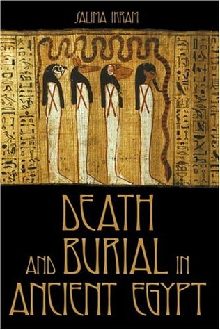

Death and Burial in Ancient Egypt
Reseña por Jorge I. Zuluaga

Ver reseña en GoodReads (necesita cuenta)
No es impreciso señalar que la cultura del antiguo Egipto gravitaba alrededor de la muerte. Desde su arquitectura monumental, pasando naturalmente por sus cosmogonías y rituales religiosos y llegando incluso a la organización social y política del Estado, la muerte estaba en el centro de la vida de los egipcios. Pero no la muerte como la entendemos hoy, el final de una única vida, sino la muerte como una transición a una vida diferente, a una vida eterna o, en el peor de los casos, a la nada.
El proceso de transición del "mundo de oriente", como llamaban en algún período de su historia los egipcios a la primera etapa de la vida —la etapa a la que nosotros llamamos propiamente estar vivos—, hacia el "mundo de occidente", es decir, a lo que ocurre después de lo que hoy llamamos la muerte, era fundamental en las vidas de los egipcios. Este hecho ha quedado patente en el legado material e inmaterial que nos dejó esta milenaria cultura, desde tumbas llenas de escenas que representan la vida en el más allá, hasta cuerpos preparados rigurosamente para seguir existiendo por millones de años.
Es esta centralidad de la muerte en la cultura egipcia lo que hace que un libro sobre la muerte y el enterramiento (el paso a la otra vida) en el antiguo Egipto no pueda resultar más que interesante para cualquier amante de la cultura que prosperó en el valle del Nilo por más de 3000 años. Pero su interés se ve además amplificado cuando la autora, la egiptóloga Salima Ikram, es una experta mundialmente reconocida en el proceso de embalsamamiento y momificación, así como en su análisis científico, con el que los egipcios preparaban a los vivos para la vida en el más allá.
"Muerte y enterramiento en el antiguo Egipto" hace un recorrido por los distintos aspectos de la preparación del cuerpo para la vida en el más allá, desde la momificación, tanto de animales humanos como no humanos, pasando por el aprovisionamiento de los difuntos, su preparación para una nueva vida en el inframundo, la construcción y simbolismo del sepulcro, incluyendo féretros (un concepto inventado por ellos), sarcófagos, tumbas monumentales y templos de culto al difunto, hasta llegar a los aspectos rituales del culto funerario y la adoración a los muertos.
Mucho se ha escrito sobre momias y tumbas en el antiguo Egipto. Pero la profesora Ikram, con su rigor egiptológico, que sin embargo no le resta una pizca de amenidad a la lectura, hace algo que no había leído en otros ensayos divulgativos sobre el tema. Durante todo el recorrido, la autora se empeña en mostrar cómo cada uno de los aspectos de las tradiciones y los métodos variaron a lo largo de la historia del antiguo Egipto. Y es que una cosa es una momia del inicio del período dinástico (cerca de 3000 a. e. c.) y otra los restos embalsamados de una noble egipcia del período grecorromano.
Parece una aclaración obvia, pero a veces olvidamos que el país de las Dos Tierras existió como tal por mucho más tiempo del que han existido todos los países del mundo. El Egipto unificado, incluso en las etapas en las que no se afanó por conquistar a los pueblos vecinos, tuvo una historia más larga que la de cualquiera de los grandes imperios militaristas, conquistadores, colonizadores y militares de la antigüedad. No debería entonces sorprendernos que las costumbres funerarias, los mitos y los métodos asociados con ellas hubieran cambiado en un intervalo de tiempo tan largo. Muy al contrario, lo que nos debería sorprender constantemente es comprobar que, a pesar de las obvias diferencias existentes, por ejemplo, entre los egipcios de las primeras dinastías y los egipcios de tiempos de la dominación griega, las tradiciones y los mitos que vemos reflejados en sus monumentos y en sus muertos preservados sean tan parecidos.
Quien no conoce lo suficiente sobre la historia de Egipto podría pensar fácilmente que la era de los grandes reyes de ese país (faraones, como se los llamó a partir del Reino Nuevo) duró tan poco como 500 años o tanto como 10 000.
Es justamente el conservadurismo de los egipcios (en lo esencial, porque es obvio que muchas cosas cambiaron en los 3000 años en los que su cultura prosperó) lo que nos lleva a pensar que lo que aprendemos sobre la vida del antiguo Egipto aplica para todas las épocas. Incluso cuando, a través de los libros y de la academia, nos acercamos a la historia de esta civilización, se nos presentan muchas ideas como si fueran comunes tanto para el pueblo que construyó las grandes pirámides como para el que levantó los obeliscos en el templo de Luxor. Pero hay que recordar que entre ellos media tanto tiempo como el que hay, en el Reino Unido, entre la reina Isabel y el rey Arturo.
Esta es justamente la principal enseñanza que me dejó el libro de la profesora Ikram (además de una infinidad de datos curiosos sobre las costumbres y mitos funerarios de los egipcios): existió un Egipto mucho más diverso del que pensamos. Debería ser menester de los académicos ayudarnos a distinguir esos muchos Egiptos que están escritos en su legado. Por otro lado, los aficionados, los #KemetLovers, deberíamos recordarlo siempre.
Lean a la profesora Ikram.
Y como siempre: ¡larga vida al legado material e inmaterial de Kemet!